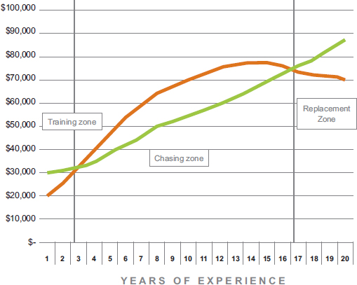

WAR and compensation for Jason Varitek.
The Boston Red Sox have long been my favorite team, even though I live in Alabama. As the Red Sox made their 2004 run to break through and finally win their first World Series in 86 years, Varitek was a key player and team leader. His WAR rose each year from 2001 to 2005, and you can see that he was getting steady pay increases. As a catcher, he had a tough job. Players at that position usually have shorter careers, and they rarely get long-term deals due to the high risk of injury.
After winning the World Series in 2004, many of the key players, including Varitek, got raises and multi-year deals, since other teams were looking to draw them away in free agency. Varitek’s on-field performance declined due to some injuries, but the front office knew that his leadership on the team offset his declining batting average. Eventually, Varitek decided to refocus his efforts, so he retired and became part of the Red Sox front office with reduced pay.
Even though you probably do not have a World Series trophy, it is no different in your business. A key employee helps you achieve a significant level of attainment in your business, so you give them a big raise or bonuses, but the employee does not continue with the same output level. Look for an opportunity to change the person’s role and compensation, like the Red Sox did with Varitek, and keep a key leader around at the right amount of pay. Sometimes the employee will leave after entertaining offers from other companies. Or maybe they will find their second wind and their career takes off again. In other cases they discover that their skills have become outdated in a changing marketplace, and they have to either retool their skills or accept a different role.
